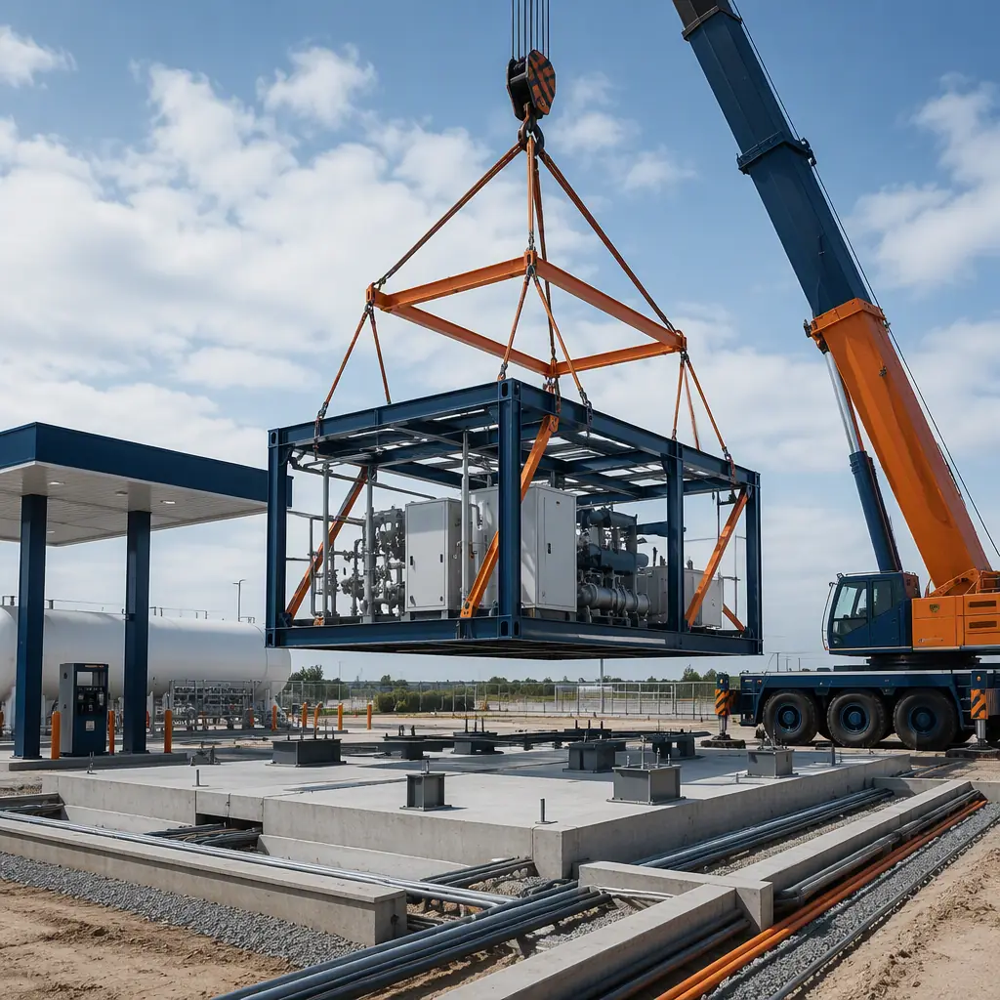
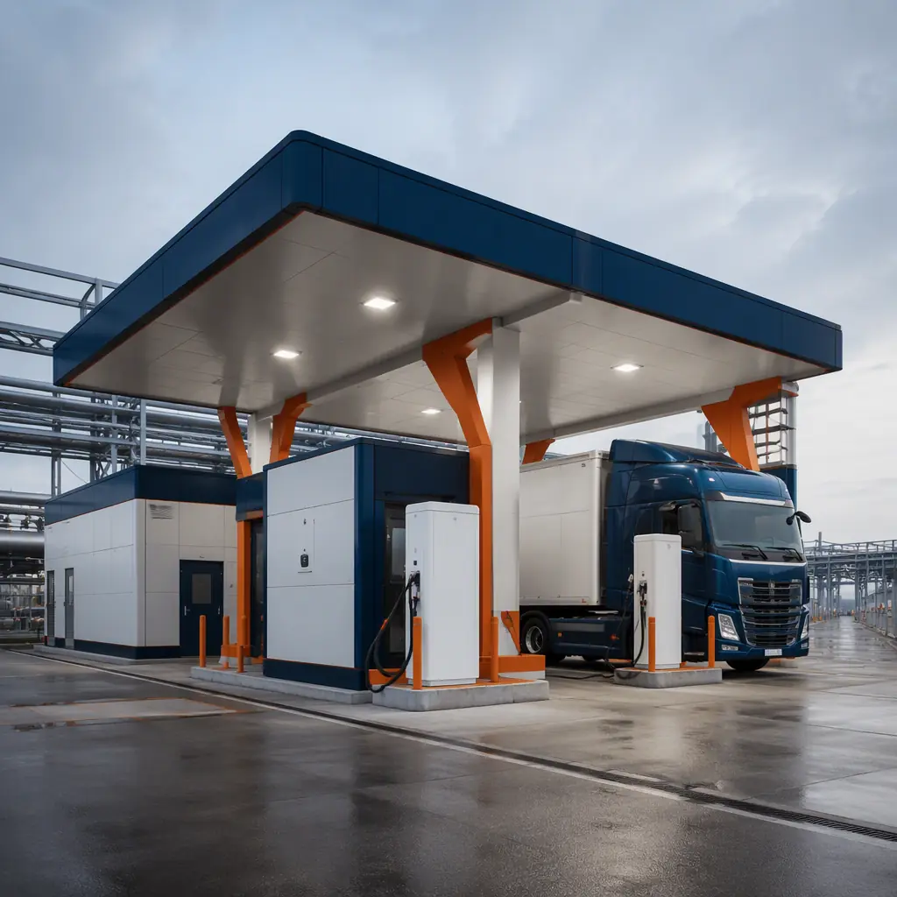
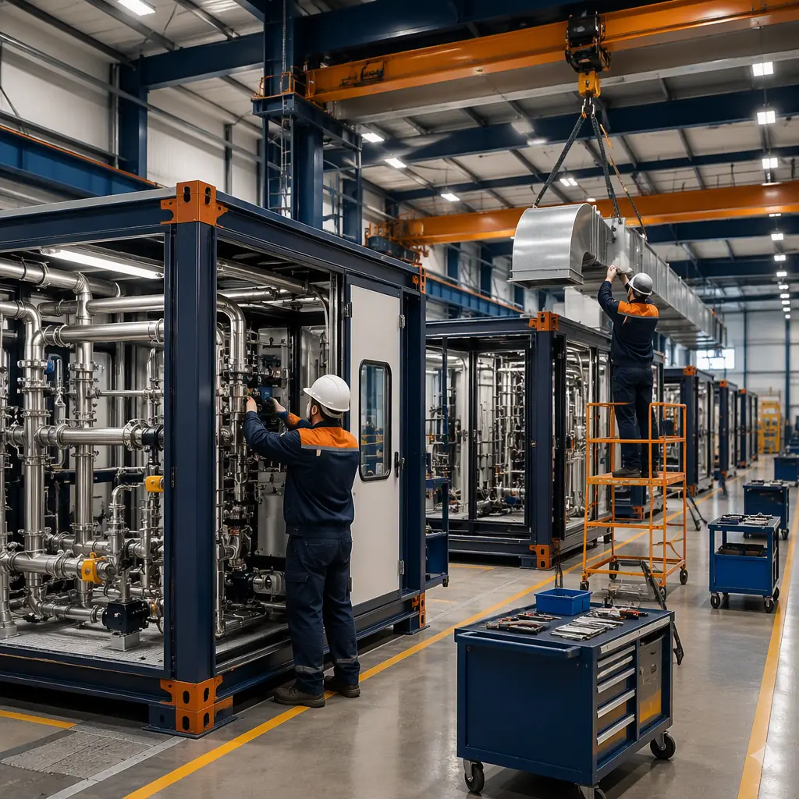
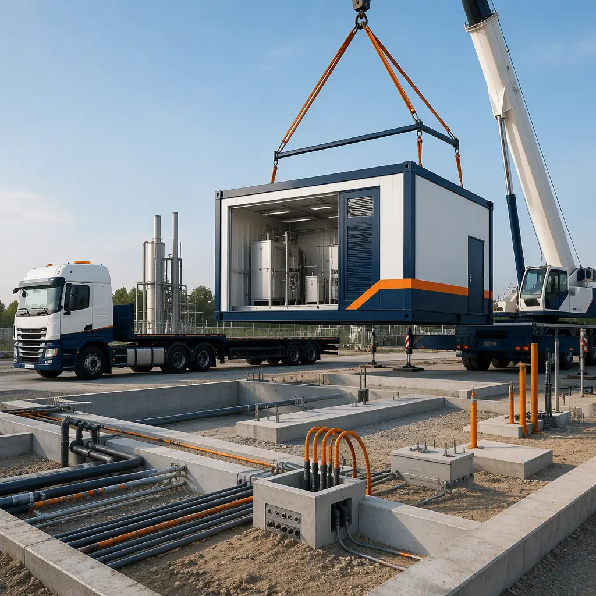

Hydrogen refueling is at an inflection point. The U.S. Department of Energy's Regional Clean Hydrogen Hubs program has committed $7 billion to hydrogen production and infrastructure, and the National Zero-Emission Freight Corridor Strategy maps 12 heavy-duty trucking corridors that will need hydrogen refueling along their length. California alone has funded more than 60 public hydrogen stations and is building toward 200 by 2035, while Europe's TEN-T core network plan calls for hydrogen refueling every 150 km on major freight routes. The problem is delivery: a conventional hydrogen station is a 12–18 month construction project with extensive site-built work, specialized equipment installation, and a permitting path that touches fire codes, pressure-vessel rules, and environmental review. Modular construction compresses that to 20–28 weeks by manufacturing the station's buildings — dispenser canopies, compressor enclosures, control rooms, and storage shelters — in a factory while the site work, utility connections, and permitting proceed in parallel. This guide explains what ships inside a modular hydrogen station, how the modules meet the hydrogen-specific code and safety regime, and what station developers should expect from factory-built delivery.

Why Hydrogen Refueling Infrastructure Is Going Modular
Hydrogen stations are equipment-dense, code-heavy, and schedule-sensitive — three properties that make them ideal for factory production. A typical station contains a dispenser area (one to four fueling positions), a compressor module, high-pressure storage (ASME or composite vessels at 350–900 bar), a chiller system for precooling dispensed hydrogen, and a control and utility building. On a conventional site, these systems are installed sequentially: foundations, then equipment shelters, then the equipment itself, then commissioning — each step exposed to weather, labor shortages, and inspection delays. In a modular delivery, the equipment shelters arrive as complete buildings with the compressors, controls, and piping already installed, aligned, and tested in the factory.
The schedule advantage compounds with the equipment lead-time problem. Compressors and dispensers can have 6–12 month lead times, and waiting to build the building until the equipment arrives adds months. Modular delivery inverts the sequence: the factory builds the enclosure to the equipment's exact footprint while the equipment is still in production, and the enclosure arrives ready to receive it — or, increasingly, the equipment manufacturer ships directly to the factory where the module is assembled and tested as a unit before transport. The result is a station whose building construction is measured in weeks, not seasons. For the broader picture of how factory-built structures serve the energy transition, see our solar and BESS infrastructure guide, which covers the adjacent balance-of-plant buildings.
Anatomy of a Hydrogen Station: What Ships Inside the Modules
A modular hydrogen station is a kit of specialized buildings, each with a defined role:
- Dispenser canopy module. A steel-frame canopy (typically 30–60 ft long) housing 1–4 dispensers, with integrated vapor detection, breakaway protection, and lighting. For heavy-duty trucking, the canopy must provide 16–18 ft of clearance and lane widths that accommodate tractor-trailers.
- Compressor enclosure module. An acoustically rated equipment shelter (typically 20–40 ft) housing the hydrogen compressor, with factory-installed ventilation, gas detection, fire suppression, and a blowdown stack stub. Compressor modules are engineered for the specific equipment package and its service access requirements.
- Storage shelter. A ventilated structure for ASME tube trailers or stationary storage vessels, designed for the vessel layout and with separation distances that satisfy the applicable code.
- Control and utility building. A finished module housing the station controller, electrical distribution, HVAC, and operator amenities — the only habitable module in the kit.
Because each module is built around a defined equipment package, the factory can pre-commission the systems that matter: pressure-test the piping, verify the gas detection wiring, and functionally test the control loop before the module leaves the factory. The equipment integration logic mirrors what MODURA documents for MEP-intensive buildings in our MEP systems integration guide, applied here to hydrogen process systems.

Heavy-Duty Trucking: 350-Bar Dispensing and Corridor Economics
The demand driver for new hydrogen stations is the Class 8 truck. Heavy-duty fuel-cell trucks need 350-bar dispensing at 5–10 kg per minute to refuel 60–80 kg of hydrogen in 10–15 minutes — fast enough to keep a truck on its duty cycle. The dispensing protocol, SAE J2601-2, governs the fill rate and the precooling temperature (typically −40°C for heavy-duty fills), which means the station must include a chiller system and dispenser hardware rated for the duty. Station developers planning corridor coverage must also plan the spacing: a hydrogen truck with a 300–500 mile range needs refueling every 150–250 miles, which defines the corridor station spacing and the throughput each station must support — typically 1–2 tons of hydrogen per day for a busy corridor station, rising toward 4–6 tons per day as volumes mature.
The corridor buildout is a franchise-style rollout problem: dozens of stations, similar designs, tight schedules, and a need to lock costs. That is the exact pattern factory-built construction is built for, and the same rollout playbook used by fueling networks generally — documented in our franchise rollout guide. Developers who standardize a station design, reserve factory capacity, and release modules against site readiness can deploy corridor networks at a pace site-built delivery cannot match. For the diesel-and-EV alternative fueling context, our gas station and EV charging hub guide covers the conventional fueling side of the same real estate.
Safety and Code Compliance: NFPA 2, IFC 605, and ASME Storage
Hydrogen stations operate under one of the strictest code regimes in commercial construction, and modular delivery handles it through documentation and controlled factory assembly. The governing framework includes:
| Requirement | Typical Standard | How Modular Delivers It |
|---|---|---|
| Hydrogen safety | NFPA 2 (Hydrogen Technologies Code) | Ventilation, gas detection, and separation designed into factory-built modules |
| Building and fire code | IFC Chapter 605, IBC Group H or S occupancy | Fire-rated assemblies with test certifications; occupancy classification engineered per module |
| Pressure vessels | ASME BPVC Section VIII | Storage shelters engineered to vessel layout and vent paths |
| Dispensing protocol | SAE J2601 / J2601-2 | Dispenser canopy modules engineered for fill rates and precooling equipment |
| Electrical | NEC Articles 500–506 (classified areas) | Classified-area wiring and controls installed and tested in factory |
The permitting path is where modular stations win or lose, and the win condition is documentation. A modular station arrives with the fire-resistance test certifications, classified-area wiring records, piping test certificates, and equipment alignment documentation already assembled — the AHJ reviews a complete submittal instead of a fragmented site-built record. Station developers should engage the local fire marshal and building department early, because hydrogen-specific familiarity varies widely by jurisdiction; our permitting and zoning guide explains the documentation strategy that gets factory-built energy projects through plan review fastest.

Cost and Timeline Benchmarks: Modular vs Stick-Built Stations
Hydrogen station economics are dominated by equipment cost — the compressors, dispensers, and storage vessels typically represent 50–65% of total project cost — but the building and site work still represent a $1.5–3 million line item on a typical $5–10 million station, and that is where modular delivery saves both money and time. For a standard corridor station, modular building delivery lands at $180–260 per sq ft for the enclosures and buildings, compared with $240–340 per sq ft for site-built equivalents of the same industrial quality, with the larger saving in schedule: 20–28 weeks from permit to ready-for-equipment versus 40–60 weeks conventionally.
The schedule saving has a direct revenue effect. A station that opens 6–8 months earlier begins earning fuel margin earlier, captures the corridor's early truck volume, and — critically for grant-funded projects — meets the expenditure deadlines that hydrogen hub and corridor programs impose. For the full financial model, including how construction cost, schedule, and equipment lead times interact, see our developer ROI analysis and our cost per square foot guide, which benchmark factory-built pricing across energy and industrial building types.
Where Modular H2 Stations Fit: Ports, Logistics Hubs, and Transit Depots
The first wave of hydrogen station deployment is clustering where fleets are concentrated: ports and drayage terminals, logistics hubs, and transit bus depots. Each has a distinct building program. A port station needs fast-fill dispensers at the gate or terminal, a compressor and storage yard sized for heavy throughput, and operator facilities — all of which arrive as modules set on prepared foundations. A logistics hub station integrates with existing warehouse infrastructure and needs the same enclosure kit plus site circulation for tractor-trailers. A transit depot station serves a captive fleet, which allows slower, more efficient fills and simpler station design — but adds the depot integration challenge of charging, maintenance, and hydrogen systems sharing one site.
For fleet operators planning depot-based hydrogen, the depot infrastructure decisions — power, layout, phasing — are covered in our EV fleet charging depot guide, which applies to hydrogen depots with the fueling system swapped, and our modular transit facilities guide covers the maintenance and storage buildings these sites need. On the industrial side, hydrogen production facilities adjacent to stations follow the same factory-built logic; our renewable energy manufacturing guide covers the production-side buildings.
Hydrogen infrastructure will be built on a corridor network, not one station at a time — and networks are won by the delivery model that can scale. Modular construction turns the hydrogen station from a 14-month construction project into a 5-month factory production order, which is the difference between building a network and hoping for one.
